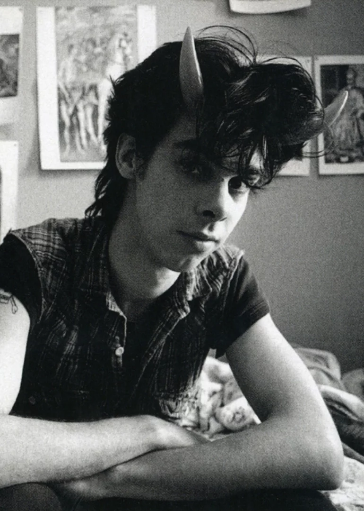

From Her to Eternity (1984).
The Firstborn Is Dead (1985)
Kicking Against the Pricks (1986)
Your Funeral... My Trial (1986)
Tender Prey (1988)
The Good Son (1990)
Henry's Dream (1992)
Let Love In (1994)
Murder Ballads (1996)
The Boatman's Call (1997)
No More Shall We Part (2001)
Nocturama (2003)
Abattoir Blues/The Lyre of Orpheus (2CD) (2004)
Dig, Lazarus, Dig!!! (2008)
Push the Sky Away (2013)
Skeleton Tree (2016)
Ghosteen (2019).
El grupo se formó originalmente en Melbourne en 1983 por Nick Cave y Mick Harvey, que se habían conocido durante su infancia en un internado.
Nick Cave comenzó a escribir letras más líricas y narrativas, en contraste con el expresionismo que usó en sus proyectos anteriores. The Bad Seeds fue concebido como un ensamble de músicos internacionales: el guitarrista Blixa Bargeld (de la banda Einstürzende Neubauten), era alemán, el bajista Barry Adamson era inglés y el guitarrista Hugo Race era australiano.
Leer más
Warracknabeal es un pueblo pequeño en el estado australiano de Victoria.
Nick Cave tiene dos hermanos mayores y una hermana menor: Timothy Cave, Peter Cave y Julie Cave. Desde pequeño se mudó a Wangaratta, Australia. Su padre, Colin Cave, era profesor de literatura y su madre, Dawn, era bibliotecaria. Sus padres practicaban el cristianismo anglicano, y la familia acudía a la catedral de Wangaratta, donde el pequeño Nick Cave cantaba como parte del coro infantil. El joven Cave tenía problemas con las autoridades escolares de su escuela, lo que le procuró en 1970 que sus padres lo enviaran a la Escuela Caulfield Grammar en Melbourne, Australia. Ahí se unió al coro de la escuela y practicó el piano. En 1971 su familia se mudó con él a Melbourne.
Después de su educación secundaria Nick Cave estudió pintura en el Instituto Tecnológico de Caulfield de 1976 a 1977. Cerca de estas fechas iniciaría su consumo de heroína. Su padre murió en un accidente automovilístico cuando Nick tenía 19 años.

En 1973 Cave conoció en Caulfield Grammar a Mick Harvey, Tracy Pew y Phill Calvert, respectivamente el guitarrista, bajista y baterista de lo
que sería su primera banda. Mientras eran estudiantes, su repertorio se componía de interpretaciones de música de Lou Reed, David Bowie,
Alice Cooper, Roxy Music y Alex Harvey con un giro proto-punk. Después de dejar la escuela en 1977 bautizaron su banda con el nombre The
Boys Next Door y comenzaron a tocar y cantar material original. Rowland S. Howard se unió a la banda en 1978 como guitarrista.
Desde 1977 hasta su disolución en 1980 la banda The Boys Next Door exploró con diversas variantes del punk: desde riffs inspirados en los de Ramones hasta una renovada ola de inspiración en David Bowie y una especie de expresionismo post-punk (véase la banda Pere Ubu) para terminar en una mezcla de escandaloso performance, ruido y art-rock.
The Boys Next Door formaron parte de la escena post-punk de Melbourne de finales de los setenta y tocaron en varios conciertos en vivo por toda Australia hasta que en 1980 cambiaron el nombre de la banda a The Birthday Party y se mudaron a Londres y después a Alemania Federal. La cantautora Anita Lane, pareja sentimental de Nick Cave, los acompañó a Londres. La banda ganó una notoria reputación gracias a las letras provocativas de Cave y a sus escandalosas actuaciones en vivo.
Después de cultivar un estatus de culto en Australia y Europa, The Birthday Party se desintegró en 1984. Rowland S. Howard y Nick Cave encontraron dificultades para seguir trabajando juntos, ambos se encontraban exhaustos por el abuso de alcohol y drogas.
Nick Cave y Mick Harvey formaron el primer ensamble de Nick Cave & The Bad Seeds. Nick Cave comenzó a escribir letras más líricas y narrativas,
en contraste con el expresionismo que usó en sus proyectos anteriores. The Bad Seeds fue concebido como un ensamble de músicos internacionales:
el guitarrista Blixa Bargeld (de la banda Einstürzende Neubauten), era alemán, el bajista Barry Adamson era inglés y el guitarrista Hugo Race
era australiano. También Anita Lane escribió canciones para The Bad Seeds. Esta alineación grabó el álbum debut de la banda: From Her to
Eternity, el cual fue lanzado en 1984.
Mientras vivía en Berlín Oeste, Cave comenzó a trabajar en su novela debut: And the Ass Saw the Angel (1989). Existe una significativa interrelación entre su novela y las letras que Cave escribió para las últimas canciones de The Birthday Party y las etapas tempranas de su carrera con The Bad Seeds. Durante la estancia de la banda en Berlín, se lanzaron cuatro álbumes: The Firstborn Is Dead, Kicking Against the Pricks, Your Funeral... My Trial y Tender Prey.
Después de terminar And the Ass Saw the Angel, Cave dejó Berlín Oeste poco después de la caída del muro de Berlín y se mudó a São Paulo, Brasil. Fue allí donde grabó, en 1990, su álbum The Good Son, una de las cumbres de su carrera. Este disco, lírico, orquestal, y carente de la furia y el desgarro anteriores, supuso el definitivo divorcio entre Cave y cierto sector de su público.
En 1992 su banda lanza Henry's Dream. En 1993, Cave dejó Brasil y se mudó a Londres, Inglaterra. Ese mismo año se publica un álbum en vivo, Live Seeds, grabado durante la gira de presentación de Henry's Dream. Un año después aparece su siguiente álbum, Let Love In, uno de sus discos mejor recibidos tanto por la crítica como por el público. Murder Ballads, de 1996, es una colección de canciones sobre asesinatos. El álbum incluye «Henry Lee», un dueto con la cantante británica PJ Harvey, y «Where the Wild Roses Grow», un dueto con Kylie Minogue. Esta última canción fue un éxito popular en Australia, donde le procuró a la banda tres premios ARIA, incluyendo "Canción del año".
El siguiente álbum, The Boatman's Call (1997), Nick Cave se desvía de las narrativas genéricas y violentas de su pasado como compositor hacia canciones con una letra biográfica y confesional sobre sus relaciones personales. Este fue también el primer álbum que se centraría en su mayor parte en el piano, tocado por Cave.
Después de The Boatman's Call tomó un descanso. Cave resurgió con el complejo, melancólico y altamente elogiado álbum No More Shall We Part que lanzó con su banda en 2001. Después del lanzamiento del álbum Nocturama (2003), Blixa Bargeld anunció su retiro de la banda, dejando a Mick Harvey como el único miembro original de The Bad Seeds, aparte del mismo Nick Cave. Sin embargo, el siguiente año la banda sacó su primer disco doble: Abattoir Blues/The Lyre of Orpheus, que tuvo gran aceptación entre los críticos.
En 2005 Nick Cave & the Bad Seeds lanzó B-Sides & Rarities, una colección de 56 canciones en tres discos, incluyendo piezas poco conocidas, "lados B" y canciones que aparecieron en bandas sonoras de películas.